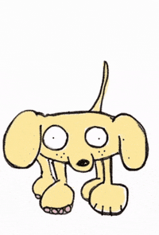

Ducky is a fascinating dog. His daily life consists of sleeping, eating, pooping, eating, playing, and sleeping. The life ahead of him is meant for two things; 1. Myself and 2. Beau. That is it. He lives for us, and will eventually pass, only knowing, us. If he only lives for us, this would make all of his actions one large service, to us. Well, we do see this, and therefore he is a good dog. One issue, his actions aren't always to be admired. He will chew up our possessions, defacate in the house, and be disobedient. Of course, he's always a good dog. What about when he goes and does a bad thing? Well, he can't be a bad dog. That's impossible. He's always a good dog. Therefore, we have The Ducky Paradox: Even when doing a bad thing, Ducky is still a good dog.
